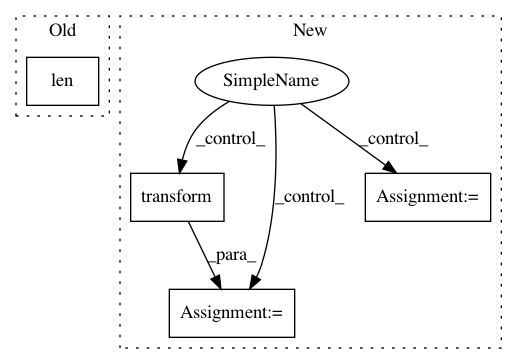

246339ce01898c92ce9e143895c5def9c46dcb78,skopt/gp_opt.py,,gp_minimize,#Any#Any#Any#Any#Any#Any#Any#Any#Any#Any#Any#Any#,26
Before Change
rng = check_random_state(random_state)
// Bounds
n_params = len(bounds)
lb, ub = extract_bounds(bounds)
// Default GP
if base_estimator is None:
After Change
best = np.inf
for j in range(n_restarts_optimizer):
x0 = space.transform(space.rvs(n_samples=1,
random_state=rng))[0]
with warnings.catch_warnings():
warnings.simplefilter("ignore")
x, a, _ = fmin_l_bfgs_b(
_acquisition, x0,
args=(gp, np.min(yi), acq, xi, kappa),
bounds=space.transformed_bounds,
approx_grad=True, maxiter=10)
if a < best:
next_x, best = x, a
next_x = space.inverse_transform(next_x.reshape((1, -1)))[0]
print(next_x)
next_y = func(next_x)
Xi = np.vstack((Xi, next_x))
yi.append(next_y)
In pattern: SUPERPATTERN
Frequency: 3
Non-data size: 4
Instances
Project Name: scikit-optimize/scikit-optimize
Commit Name: 246339ce01898c92ce9e143895c5def9c46dcb78
Time: 2016-06-14
Author: g.louppe@gmail.com
File Name: skopt/gp_opt.py
Class Name:
Method Name: gp_minimize
Project Name: anttttti/Wordbatch
Commit Name: 7170cdf9c6ed8beacd93738b0ec1c97cfbc23b6e
Time: 2018-04-12
Author: antti.puurula@yahoo.com
File Name: wordbatch/wordbatch.py
Class Name: WordBatch
Method Name: process
Project Name: snipsco/snips-nlu
Commit Name: 75df2742635b09f97e8d7ec9396750aa17046567
Time: 2017-03-24
Author: tristan.deleu@gmail.com
File Name: snips_nlu/intent_parser/builtin_intent_parser.py
Class Name: BuiltinIntentParser
Method Name: get_intent